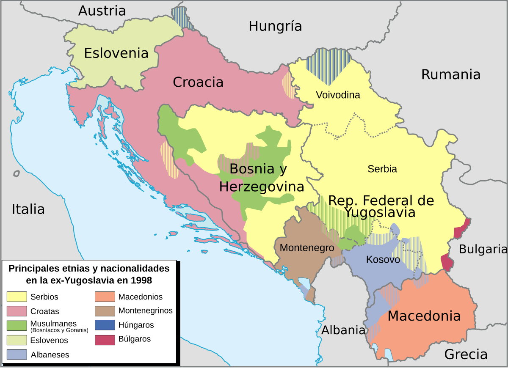
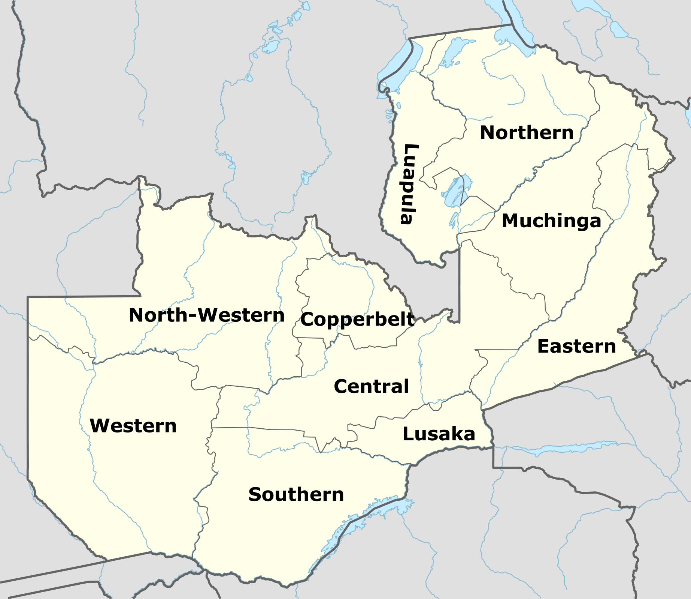
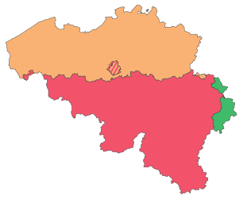
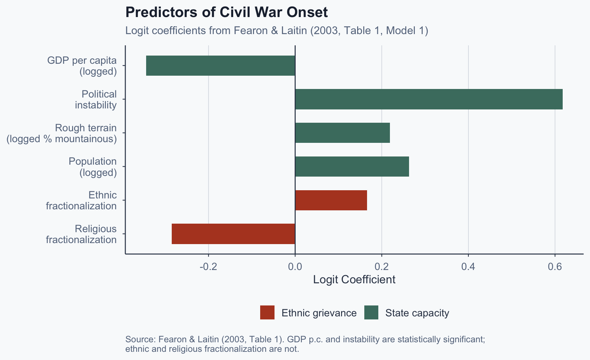
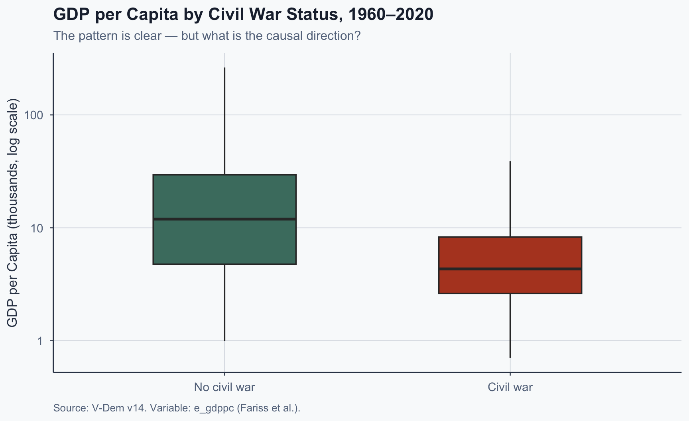
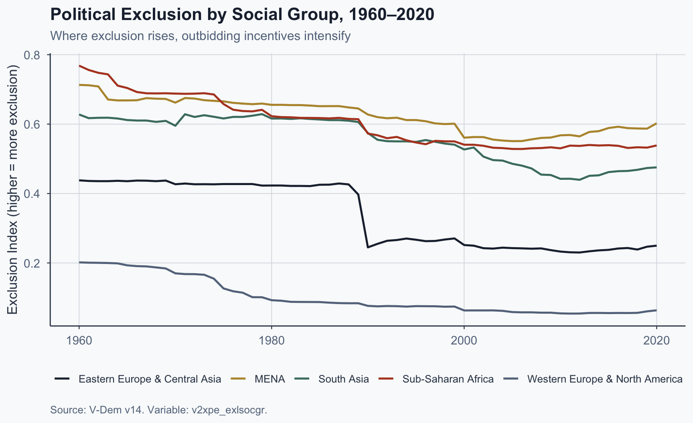

![]()
%%{init: {"theme": "base", "themeVariables": {"fontSize": "22px", "primaryColor": "#b44527", "primaryTextColor": "#1e293b", "lineColor": "#334155", "secondaryColor": "#f9fafb"}, "flowchart": {"useMaxWidth": true, "nodeSpacing": 70, "rankSpacing": 80, "htmlLabels": true, "curve": "basis"}, "width": 1150, "height": 650}}%%
flowchart LR
A["Ethnic<br/>Categories"] -->|"Political<br/>mobilization"| B["Ethnic<br/>Groups"]
A -->|"No<br/>mobilization"| C["Categories<br/>Remain Dormant"]
B --> D["Treated as<br/>Unified Actors"]
D -->|"Analytical<br/>error"| E["Groupism"]
style A fill:#f9fafb,stroke:#334155,stroke-width:2px
style B fill:#4a7c6f,stroke:#334155,stroke-width:2px,color:#f9fafb
style C fill:#f9fafb,stroke:#334155,stroke-width:2px
style D fill:#f9fafb,stroke:#334155,stroke-width:2px
style E fill:#b44527,stroke:#334155,stroke-width:2px,color:#f9fafb
Comparative Politics
Lecture 9: Ethnicity, Nationalism, and Political Identity
The Puzzle
Yugoslavia, 1991: Neighbors who intermarried for decades killed each other along ethnic lines within months.
Tanzania: 120+ ethnic groups — minimal ethnic mobilization since independence.
Why do some identities become politically explosive while others remain dormant?

Ethnic groups in the former Yugoslavia. Source: Wikimedia Commons, CC BY-SA 4.0.
Today’s Roadmap
We build the answer in three steps:
- The Construction Problem — Are ethnic identities fixed or built?
- When Does Identity Become Political? — What activates specific cleavages?
- The Danger Question — When does identity politics turn violent?
Running theme: Endogeneity — ethnic identity is tangled with the conflicts it supposedly explains.
I. The Construction Problem
Two Views of Ethnicity
| Primordialism | Constructivism | |
|---|---|---|
| Core claim | Identities are ancient, fixed | Identities are made, fluid |
| Source | Blood, kinship, deep culture | Institutions, politics, markets |
| Implication | Diversity → conflict | Context → mobilization |
| Weakness | Cannot explain variation | Can explain too much |
Author’s illustration.
The Empirical Question
The puzzle is not whether identities are “real.”
- People die for ethnic identities — they are real in their consequences
- The question is whether their existence explains their political salience
- Answer: it does not — existence is constant, salience varies
Gellner: Nationalism and Industrialization
Core argument: Industrialization requires a literate, standardized workforce — nationalism is the political program that supplies it.
- Agrarian societies tolerate diversity; industrial economies demand mass education, shared language, and labor mobility
Causal chain: Agrarian society → Industrialization → Need for literate workforce → Mass education → Standardized culture → Nationalism
Explains the timing of nationalism — why it emerges with modernity, not before. Limitation: less useful outside Europe.
Anderson: Imagined Communities
Core argument: Print capitalism lets millions of strangers feel solidarity — creating the imagined community we call a nation.
Mechanism: Print capitalism → Vernacular languages fixed → Mass readership → Shared simultaneous experience → National identity
Explains the form of nationalism — why people feel they belong to a bounded community. Limitation: says little about which identity wins.
Printing press, woodcut by Jost Amman (1568). Public domain.
Brubaker: Ethnicity Without Groups
The pivot of the lecture. Brubaker’s critique reframes everything that follows.
“Groupism” — the tendency to treat ethnic categories as if they were unified, bounded actors
- Ethnic categories exist (census labels, language families)
- Ethnic groups as coherent political actors are not given — they are achievements
- Saying “the Hutus did X” is already an analytical error — it treats the outcome of mobilization as its starting point
Brubaker’s Core Distinction
Author’s illustration based on Brubaker (2002).
Why Brubaker Matters for the Rest
- If groups are constructed through political conflict rather than preceding it…
- …then claims that ethnicity caused an outcome face a deep endogeneity problem
- Treating ethnicity as a variable with a stable value is already a theoretical error
Hold this question — it will return in every section that follows.
The Constructivist Scorecard
| Theorist | Explains | Mechanism | Limitation |
|---|---|---|---|
| Gellner | Timing of nationalism | Industrial need for literate culture | Less useful outside Europe |
| Anderson | Form of national feeling | Print capitalism creates imagined community | Says little about which identity wins |
| Brubaker | Analytical error in studying ethnicity | Groupism critique | Doesn’t predict mobilization |
Author’s illustration.
Exercise 1: Rewriting Headlines
Rewrite these headlines to avoid Brubaker’s groupism error:
- “The Kurds demand independence from Iraq”
- “Muslims oppose the new French law”
For each, replace the group-as-actor framing with a more precise formulation.
What makes a strong rewrite: It identifies which actors within the category are making claims, on whose behalf, and what political process made the category salient in the first place.
Format: Write individually (2 min), then compare with a neighbor (3 min). We’ll share the strongest rewrites.
So What? Bridge to Section II
We now know that identities are constructed, not primordial.
But constructivism alone is too permissive — it says identities can become salient but not when or why.
Next question: What determines which cleavages get activated?
II. When Does Identity Become Political?
The Core Argument
It is not diversity that does the work. It is the institutional and strategic context that determines which cleavages get activated.
- The same society can have multiple potential cleavages (language, religion, region, tribe)
- Which one becomes politically relevant depends on institutions and incentives
Posner’s Natural Experiment: Zambia
The cleanest empirical design in this lecture.
- Zambia has the same ethnic groups before and after democratization (1991)
- Under one-party rule: small tribal coalitions were politically relevant
- Under multiparty competition: larger linguistic groups became the relevant cleavage
- Same country, same people, different institutions → different identity politics

Provinces of Zambia. Source: Wikimedia Commons, CC BY 2.5.
Posner’s Research Design
%%{init: {"theme": "base", "themeVariables": {"fontSize": "21px", "primaryColor": "#4a7c6f", "primaryTextColor": "#1e293b", "lineColor": "#334155", "secondaryColor": "#f9fafb"}, "flowchart": {"useMaxWidth": true, "nodeSpacing": 55, "rankSpacing": 65, "htmlLabels": true, "curve": "basis"}, "width": 1150, "height": 650}}%%
flowchart LR
A["One-Party<br/>Rule"] --> B["Small Arena<br/>for Competition"]
B --> C["Tribal Cleavage<br/>Activated"]
D["Multiparty<br/>Democracy"] --> E["Large Arena<br/>for Competition"]
E --> F["Linguistic Cleavage<br/>Activated"]
style A fill:#b44527,stroke:#334155,stroke-width:2px,color:#f9fafb
style B fill:#f9fafb,stroke:#334155,stroke-width:2px
style C fill:#f9fafb,stroke:#334155,stroke-width:2px
style D fill:#4a7c6f,stroke:#334155,stroke-width:2px,color:#f9fafb
style E fill:#f9fafb,stroke:#334155,stroke-width:2px
style F fill:#f9fafb,stroke:#334155,stroke-width:2px
Author’s illustration based on Posner (2004).
Posner: Why the Design Works
- Identification logic: Institutions changed, identity salience followed
- Rules out the alternative that group differences inherently cause conflict
- The size of the political arena determines which coalitions are viable
- Small arena → small groups sufficient → tribal identity
- Large arena → need bigger coalitions → linguistic identity
Posner: Strengths and Limits
Posner partially addresses the endogeneity problem:
- Institutions change → identity salience follows (good causal direction)
But: the categories (Bemba, Tonga, etc.) already existed — the design shows cleavage activation, not cleavage creation.
What would it take to show the conflict created the groups rather than merely activating them?
Wimmer: Boundary-Making
Complements Posner by supplying the mechanism.
- Ethnic boundaries are not fixed lines — they are negotiated, contested, and redrawn
- Elites have incentives to ethnicize competition when it helps win resources
- Five strategies: expansion, contraction, inversion, repositioning, blurring
Key insight: Boundaries shift in predictable ways depending on the power configuration.
Wimmer’s Boundary Strategies
| Strategy | Definition | Example |
|---|---|---|
| Expansion | Enlarge group boundaries | Pan-Arabism |
| Contraction | Narrow group definition | Tutsi vs. Hutu hardening |
| Inversion | Revalue stigmatized identity | “Black is Beautiful” |
| Repositioning | Switch group membership | Passing as another group |
| Blurring | Reduce boundary salience | Civic nationalism |
Author’s illustration based on Wimmer (2008).
Applying Wimmer: Belgium vs. Switzerland
Two multilingual European democracies — opposite outcomes explained by Wimmer’s strategies.
- Belgium → Contraction: Institutions hardened the Flemish/Walloon boundary (separate parties, media, education)
- Switzerland → Blurring: Cantonal federalism cuts across language lines, reducing boundary salience

Linguistic communities of Belgium. Source: Wikimedia Commons, CC BY-SA 3.0.
Belgium vs. Switzerland
| Feature | Belgium | Switzerland |
|---|---|---|
| Wimmer strategy | Contraction (boundary hardening) | Blurring (boundary reduction) |
| Cleavage structure | Reinforcing (language = region = party) | Crosscutting (language ≠ religion ≠ class) |
| Federal design | Linguistic communities with veto powers | Cantons that cut across language lines |
| Party system | Separate Flemish/Walloon parties | National parties with local lists |
| Outcome | Deep ethnic polarization | Low ethnic salience |
Author’s illustration. Wimmer strategy labels based on Wimmer (2008).
Exercise 2: Identifying Wimmer’s Strategies
Match each scenario to a Wimmer strategy (expansion, contraction, inversion, repositioning, or blurring):
- African Union promotes continental identity over national identity
- Belgian politicians demand separate Flemish/Walloon social security
- Black Power movement revalues a stigmatized identity
- Rising intermarriage and mixed census categories in Brazil
The harder cases are where multiple strategies apply — defend your choice. (2 min individual, 3 min discuss)
So What? Bridge to Section III
We now know that institutions determine which identities become politically salient.
But political salience ≠ violence. Most ethnic politics is democratic competition, not civil war.
Next question: When does identity politics turn dangerous?
III. The Danger Question
Fearon & Laitin: The Counterintuitive Finding
When does identity politics turn violent? The intuitive story — ethnic grievances → conflict — explains far less than we think.
- Ethnic and religious diversity are poor predictors of civil war onset
- State weakness — poverty, instability, rough terrain — is a strong predictor
- The question is not “why do ethnic groups fight?” but “why do insurgencies become viable?”
Fearon & Laitin: Key Predictors

Fearon & Laitin: The Reframing
%%{init: {"theme": "base", "themeVariables": {"fontSize": "22px", "primaryColor": "#b44527", "primaryTextColor": "#1e293b", "lineColor": "#334155", "secondaryColor": "#f9fafb"}, "flowchart": {"useMaxWidth": true, "nodeSpacing": 60, "rankSpacing": 70, "htmlLabels": true, "curve": "basis"}, "width": 1150, "height": 650}}%%
flowchart LR
A["Weak State<br/>(poverty, instability)"] --> B["Insurgency<br/>Becomes Viable"]
B --> C["Civil War<br/>Onset"]
D["Ethnic<br/>Grievance"] -.->|"Weak<br/>predictor"| C
style A fill:#4a7c6f,stroke:#334155,stroke-width:2px,color:#f9fafb
style B fill:#f9fafb,stroke:#334155,stroke-width:2px
style C fill:#b44527,stroke:#334155,stroke-width:2px,color:#f9fafb
style D fill:#f9fafb,stroke:#64748b,stroke-width:1px,stroke-dasharray:5 5
Author’s illustration based on Fearon & Laitin (2003).
Civil War and Income: Which Way Does Causation Run?

Three possibilities: Low income → state weakness → civil war? Civil war → economic destruction → low income? Or a third factor (geography, colonial history) that drives both? This is the endogeneity challenge in one chart.
Fearon & Laitin: Methodological Lesson
- Their large-N design identifies correlates of civil war onset
- It cannot identify the mechanism linking state weakness to violence
- Correlation: weak states have more civil wars
- But how does weakness enable violence? Through what chain?
- This is a general limitation of cross-national regression
Horowitz: Ethnic Outbidding
A different causal chain — escalation within democratic competition.
- In ethnically divided democracies, parties compete for co-ethnic votes
- Moderate leaders face pressure from flanking parties offering more extreme ethnic appeals
- Moderation becomes electorally fatal — a ratchet toward extremism
Key distinction: This is about democratic ethnic politics, not insurgency. Different mechanism, different conditions.
The Outbidding Mechanism
%%{init: {"theme": "base", "themeVariables": {"fontSize": "20px", "primaryColor": "#b44527", "primaryTextColor": "#1e293b", "lineColor": "#334155", "secondaryColor": "#f9fafb"}, "flowchart": {"useMaxWidth": true, "nodeSpacing": 50, "rankSpacing": 60, "htmlLabels": true, "curve": "basis"}, "width": 1150, "height": 650}}%%
flowchart LR
A["Moderate Ethnic<br/>Party"] --> B["Flanking Party<br/>Makes Extreme<br/>Appeals"]
B --> C["Moderate Loses<br/>Co-ethnic Voters"]
C --> D["Moderate<br/>Radicalizes"]
D --> E["Escalation<br/>Spiral"]
E -->|"Cycle<br/>repeats"| B
style A fill:#4a7c6f,stroke:#334155,stroke-width:2px,color:#f9fafb
style B fill:#f9fafb,stroke:#334155,stroke-width:2px
style C fill:#f9fafb,stroke:#334155,stroke-width:2px
style D fill:#f9fafb,stroke:#334155,stroke-width:2px
style E fill:#b44527,stroke:#334155,stroke-width:2px,color:#f9fafb
Author’s illustration based on Horowitz (1985).
Outbidding in Practice: Sri Lanka
1956: S.W.R.D. Bandaranaike’s SLFP outbids the ruling UNP with the “Sinhala Only Act” — replacing English with Sinhala as the sole official language, excluding Tamil speakers
1960s–70s: Moderate Tamil parties (Federal Party, TULF) lose ground to militant groups (LTTE) who outbid them — each side radicalizes in response to the other
1983: Anti-Tamil pogroms (“Black July”) — competitive radicalization crosses the threshold from democratic politics to organized violence
1983–2009: Full civil war. What began as electoral outbidding became an insurgency that killed over 100,000 people.
Based on Horowitz (1985); DeVotta (2004), Blowback: Linguistic Nationalism, Institutional Decay, and Ethnic Conflict in Sri Lanka.
Where Outbidding Conditions Intensify

Where exclusion of social groups rises, ethnic entrepreneurs have more grievance to mobilize. Which regions’ trajectories would Horowitz’s outbidding model predict are most at risk?
Two Pathways to Ethnic Violence
| Fearon & Laitin | Horowitz | |
|---|---|---|
| Outcome | Civil war onset | Democratic radicalization |
| Key predictor | State weakness | Electoral competition structure |
| Mechanism | Insurgency becomes viable | Outbidding spiral |
| Level | Cross-national, large-N | Within-country, party-level |
| Limitation | Correlates, not causes | Scope limited to democracies |
Author’s illustration.
The Endogeneity Problem — A Concrete Demonstration
Suppose you estimate: Civil War = β₀ + β₁ × Ethnic Fractionalization + ε You find β₁ > 0. Does diversity cause conflict?
- Today’s fractionalization reflects prior conflicts — colonial divide-and-rule, partition, forced transfers all reshaped boundaries
- The groups you count were partly created by the conflicts you’re explaining — “Hutu”/“Tutsi” as rigid categories are a product of Belgian colonial policy
- This is not omitted variable bias — the category system itself is endogenous
Bottom line: We explain conditions better than causes. That limitation is the frontier.
Exercise 3: Diagnosing Sri Lanka
Fill in the table using the Sri Lanka case we just discussed:
| What it explains about Sri Lanka | What it misses | |
|---|---|---|
| Fearon & Laitin | ? | ? |
| Horowitz | ? | ? |
Scaffolding: A complete answer recognizes that F&L explains why insurgency was viable (poverty, rough terrain in the north/east) but not why it took ethnic form. Horowitz explains the democratic escalation (Sinhala Only Act, outbidding) but not the transition from electoral competition to military conflict.
Format: Fill in individually (3 min), then compare with a neighbor (2 min).
Conclusion
Key Takeaways
- Ethnic identities are constructed, not primordial — but they are real in their consequences
- Political salience depends on institutions and incentives, not diversity per se
- Ethnic violence reflects state weakness more than ethnic grievance
- The endogeneity of identity to conflict is the deepest challenge in this literature
- We explain conditions better than causes — and that honesty matters methodologically
The Lecture’s Logic in One Diagram
%%{init: {"theme": "base", "themeVariables": {"fontSize": "20px", "primaryColor": "#4a7c6f", "primaryTextColor": "#1e293b", "lineColor": "#334155", "secondaryColor": "#f9fafb"}, "flowchart": {"useMaxWidth": true, "nodeSpacing": 50, "rankSpacing": 55, "htmlLabels": true, "curve": "basis"}, "width": 1150, "height": 650}}%%
flowchart LR
A["Ethnic<br/>Categories<br/>Exist"] --> B["Institutions<br/>Activate<br/>Cleavages"]
B --> C["Identity Becomes<br/>Politically<br/>Salient"]
C --> D{"State<br/>Capacity?"}
D -->|"Weak"| E["Civil War<br/>Risk"]
D -->|"Strong"| F["Democratic<br/>Competition"]
F --> G["Outbidding<br/>Risk"]
style A fill:#f9fafb,stroke:#334155,stroke-width:2px
style B fill:#4a7c6f,stroke:#334155,stroke-width:2px,color:#f9fafb
style C fill:#f9fafb,stroke:#334155,stroke-width:2px
style D fill:#b7943a,stroke:#334155,stroke-width:2px,color:#1e293b
style E fill:#b44527,stroke:#334155,stroke-width:2px,color:#f9fafb
style F fill:#f9fafb,stroke:#334155,stroke-width:2px
style G fill:#b44527,stroke:#334155,stroke-width:2px,color:#f9fafb
Author’s illustration.
Discussion Prompt
Find a case where an ethnic identity became politically salient within living memory.
- What evidence would you need to determine whether the identity itself changed or the political opportunity structure changed?
- Why is that distinction hard to establish empirically?
Anchor readings: Brubaker (2002); Posner (2004); Fearon & Laitin (2003); Wimmer (2008).
References
Anderson, B. (1983). Imagined communities: Reflections on the origin and spread of nationalism. Verso.
DeVotta, N. (2004). Blowback: Linguistic nationalism, institutional decay, and ethnic conflict in Sri Lanka. Stanford University Press.
Brubaker, R. (2002). Ethnicity without groups. European Journal of Sociology / Archives Européennes de Sociologie, 43(2), 163–189. https://doi.org/10.1017/S0003975602001066
Fearon, J. D., & Laitin, D. D. (2003). Ethnicity, insurgency, and civil war. American Political Science Review, 97(1), 75–90. https://doi.org/10.1017/S0003055403000534
Gellner, E. (1983). Nations and nationalism. Cornell University Press.
Horowitz, D. L. (1985). Ethnic groups in conflict. University of California Press.
Posner, D. N. (2004). The political salience of cultural difference: Why Chewas and Tumbukas are allies in Zambia and adversaries in Malawi. American Political Science Review, 98(4), 529–545. https://doi.org/10.1017/S0003055404041334
Wimmer, A. (2008). The making and unmaking of ethnic boundaries: A multilevel process theory. American Journal of Sociology, 113(4), 970–1022. https://doi.org/10.1086/522803
Popescu (JCU) Comparative Politics Lecture 9: Ethnicity, Nationalism, and Political Identity